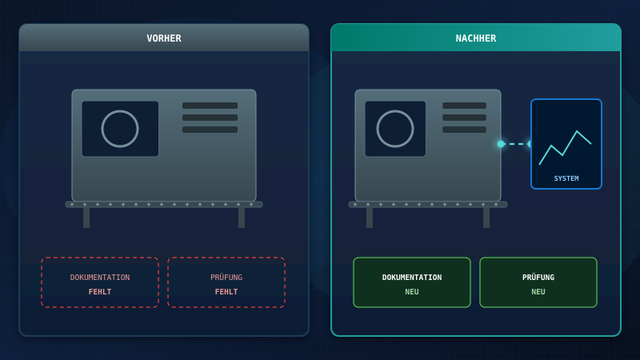
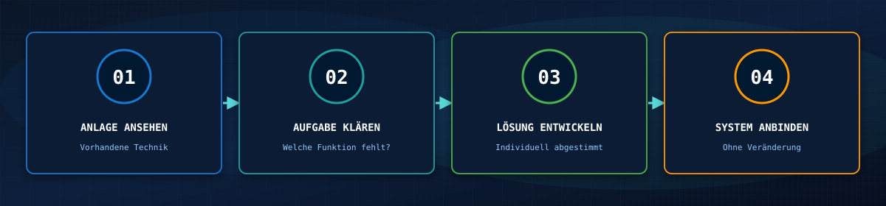
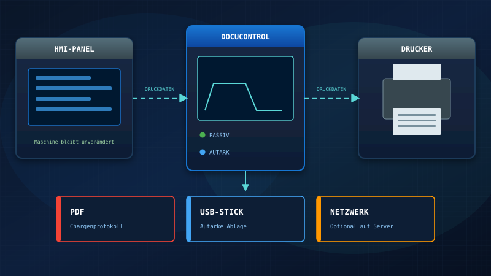
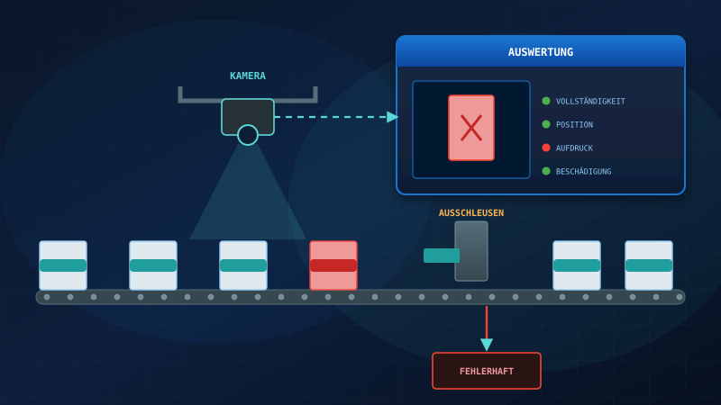

Schnittstelle
Viele Bestandsanlagen laufen seit Jahren zuverlässig, ihnen fehlen aber einzelne Funktionen – etwa eine lückenlose Dokumentation oder eine automatische Qualitätsprüfung. Dafür muss weder eine neue Anlage angeschafft noch die bestehende umgebaut werden.
Wir entwickeln individuelle Lösungen, mit denen sich Ihre bestehende Anlage erweitern lässt. Unser System wird an die Anlage angebunden, ohne dass daran Veränderungen vorgenommen werden müssen. Steuerung, Programme und Abläufe bleiben so, wie sie sind.

Was sich für Sie ändert
Die Anlage bleibt dieselbe, sie kann danach nur mehr. Funktionen, die bisher gefehlt haben, kommen über unser System dazu. Es verbindet sich mit der Anlage, unterstützt den laufenden Betrieb und verbessert bestehende Abläufe.
Warum ohne Veränderung
Jede Änderung an einer laufenden Anlage ist ein Aufwand und ein Risiko. Bei validierter Software, etwa in der Medizintechnik, kommt sie oft gar nicht infrage. Deshalb binden wir unser System so an, dass Sie an der bestehenden Anlage nichts verändern müssen.
Ihre Vorteile
Individuelle Lösung
Abgestimmt auf Ihre Anlage und Ihre Aufgabe statt Standard von der Stange.
Bestehendes erweitern
Ihre Anlage bleibt im Einsatz und bekommt die Funktionen, die ihr bisher fehlen.
Anbindung ohne Veränderung
Unser System wird angebunden, ohne dass Sie an der Anlage etwas verändern müssen.
Neue Funktionen
Zum Beispiel Chargendokumentation als PDF, Bildauswertung oder automatische Ausschleusung.
So gehen wir vor
Jede Anlage ist anders. Deshalb richtet sich die Lösung nach Ihrer vorhandenen Technik und nach der Funktion, die Ihnen fehlt.

Unsere Systeme
Diese beiden Systeme zeigen, wie das in der Praxis aussieht.

DocuControl
DocuControl wird passiv zwischen HMI-Panel und Drucker geschaltet und liest die Protokolle direkt aus dem Druckdatenstrom. Die Maschinensteuerung wird nicht verändert. Die Dokumentation entsteht automatisch als PDF und wird autark gespeichert, optional zusätzlich im Netzwerk.
Mehr zu DocuControl →
VisionControl
VisionControl prüft Teile im laufenden Prozess per Kamera und wertet die Bilder automatisch aus, etwa auf Vollständigkeit, Position, Aufdruck oder Beschädigungen. Fehlerhafte Teile werden taktgenau ausgeschleust, die Ergebnisse bleiben nachvollziehbar.
Mehr zu VisionControl →Häufige Fragen
Muss an meiner Anlage etwas verändert werden?
Nein. Unser System wird angebunden, ohne dass Sie an der bestehenden Anlage Veränderungen vornehmen müssen.
Brauche ich dafür eine neue Anlage?
Nein. Ihre vorhandene Anlage bleibt im Einsatz und wird um die fehlenden Funktionen erweitert.
Gibt es die Lösung auch für meine Anlage?
Das klären wir gemeinsam. Unsere Lösungen werden individuell auf die vorhandene Technik und Ihre Aufgabe abgestimmt.